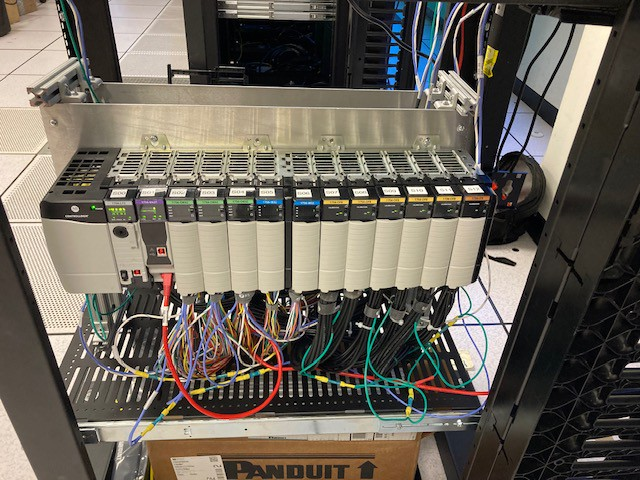

SPHERE ICS cluster · Hello world
Replay three industrial control incidents side by side, a hydro plant, a water-treatment train and a pump station, then see the plant SPHERE builds for every team that investigates them.
Step 1
The replay below shows a fictional mountain region. A hydro plant feeds the grid, a treatment plant cleans river water, and a pump station delivers it to a village. Each site runs its own controller, and each has an incident in progress.
Expected: a map with three site cards (Canyon Reach Hydro, Summit Basin Treatment, North Rim Distribution) and the village they serve.
Step 2
Each utility is a different control domain. Open one: the replay zooms to that site and opens its panel, with the operator’s screen on top and a floor view of the equipment below. A 3D version adds a 3D model of each site’s floor.
A generating unit is ready to reconnect. Watch the request to close its 52G breaker, the unit's speed and the synchroscope, and how much power it makes.
An ultrafiltration train is due for a backwash. Watch the backwash tank level, the train's phase, and the pump and inlet commands.
A pump station wants to restart after a power event. Watch the restart request, the supplied power notice, and the storage tank feeding the village.
Expected: the site’s panel opens on the right, showing its operator display and floor view.
Step 3
The replay stops just before each controller makes its first decision. That decision, and the evidence for it, is what teams investigate in the exercise.
Expected: each site’s events play in order, and the replay ends on a “Decisions pending” card with one question per utility.
Step 4
For the exercise, SPHERE builds each team its own copy of a utility plant: six machines on their own network, created from one short model file. Each machine fills a role, and each role can be filled by different software or by real equipment. Switch the build to see the same plant with real hardware.
The plant the CTF1 teams use: every machine is a virtual machine, and both PLCs are OpenPLC.
Every team gets
Eleven of these plants run at once, one per team plus a staff test copy.
Swap any part
| Role | In the CTF1 exercise | Also possible on SPHERE |
|---|---|---|
| PLC (controller) | OpenPLC runtime on a VM | Rockwell ControlLogix hardware |
| Plant simulator | OpenPLC running the plant model | A second ControlLogix running the plant model |
| HMI | Web HMI on a VM | FUXA, ScadaBR, Rockwell FactoryTalk (virtual or a hardware panel) |
| Engineering workstation | Ubuntu VM | Windows VM (for example with Studio 5000) or a physical workstation |
| Utility | Hydro, treatment or distribution | Any controller program and plant model in the use-case library |
| Network | Five zones and a field link | Zones, links and addresses are set in the model file |
The model file SPHERE builds from
fw = vm("fw", 2, 2) # zone firewall
ews = vm("ews", 2, 4) # engineering workstation
hmi = vm("hmi", 2, 2) # operator screen
plc = vm("plc", 2, 2) # OpenPLC: the controller
proc = vm("proc", 1, 2) # OpenPLC: the plant simulator
dmz = vm("dmz", 1, 2) # third-party gateway
zone(ews, ...); zone(plc, ...); zone(hmi, ...); zone(dmz, ...) # each zone meets only at fw
field = net.connect([plc, proc]) # the field link
experiment(net)
Expected: you can trace an HMI poll from the operator screen, through the firewall, to the PLC, and name what could replace each machine.
The replay in steps 1–3 is the course’s authored record of each incident. The team plants run the same three utilities live.
What’s next